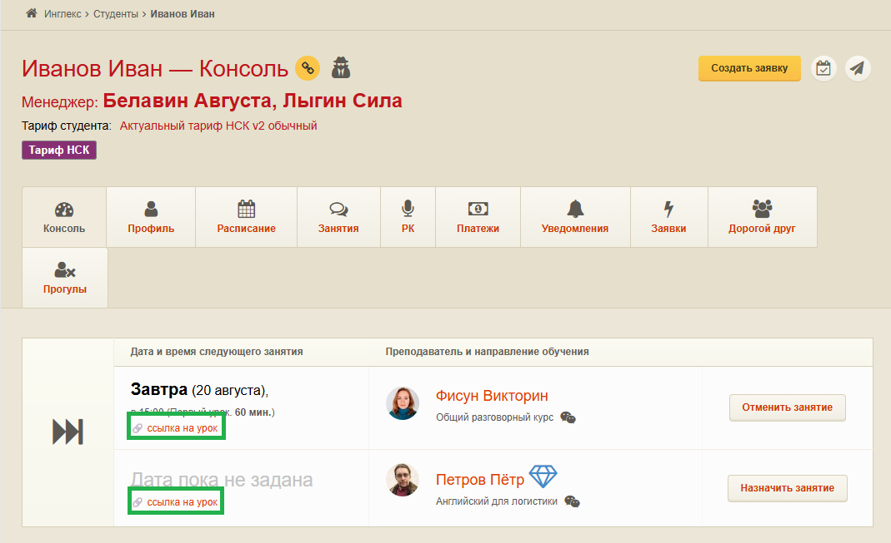

Ссылка на комнату с преподавателем
Как скопировать ссылку на урок в консоли студента и отправить её в чат
Ссылка создаётся в консоли студента и копируется одним кликом. Ниже — пошаговая инструкция с примером на скриншоте.
- Ссылка действует 24 часа с момента создания
- Вставьте в чат со студентом: Ctrl+V или ПКМ → «Вставить»
-
Откройте консоль студента
Перейдите в профиль нужного студента и откройте вкладку «Консоль» — там отображается расписание и ближайшие занятия.
-
Найдите «ссылка на урок»
В блоке с расписанием, в колонке с датой и временем занятия, найдите пункт «ссылка на урок» (иконка цепочки) для нужного урока — как на скриншоте ниже, в зелёной рамке.

Консоль студента — «ссылка на урок» под датой и временем занятия -
Скопируйте ссылку
Кликните по «ссылка на урок» левой кнопкой мыши. В правом верхнем углу должно появиться уведомление:
Данные скопированы -
Отправьте ссылку студенту
Вставьте скопированную ссылку в чат со студентом — через Ctrl+V или контекстное меню → «Вставить». Ссылка будет работать 24 часа с момента её создания.
Совет: Копируйте ссылку непосредственно перед уроком — так студент получит актуальную ссылку на весь срок её действия.